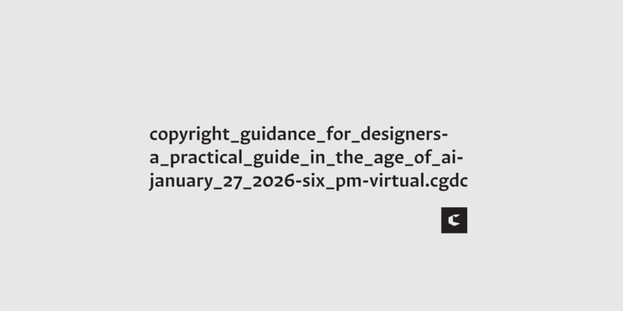

Copyright Guidance for Designers: A practical guide in the age of AI
Join us for a practical seminar on copyright guidance for designers in the age of AI. This event will feature attorneys Faye Vasilopoulos and Joseph Marinelli from Irwin IP LLP who will guide you through the fundamentals of copyright law and the evolving legal landscape shaped by AI tools.
Details
Copyright questions are a routine part of modern graphic design practice, especially as new tools and technologies reshape how creative work is made. AI tools are quickly becoming part of the graphic design workflow, but they also raise important questions about ownership, copyright protection, and risk.
This seminar is designed to guide graphic designers through the fundamentals of copyright law, how to protect their original work, and how legal issues can arise when using AI-generated content. The discussion will place these issues in today’s creative landscape, including how AI-assisted tools may affect copyright protection and risk.
What You’ll Learn
Core copyright principles every graphic designer should understand
How to protect original work & manage copyright risks, especially when using AI tools
Practical insights on ownership & legal considerations in today’s AI-influenced creative landscape